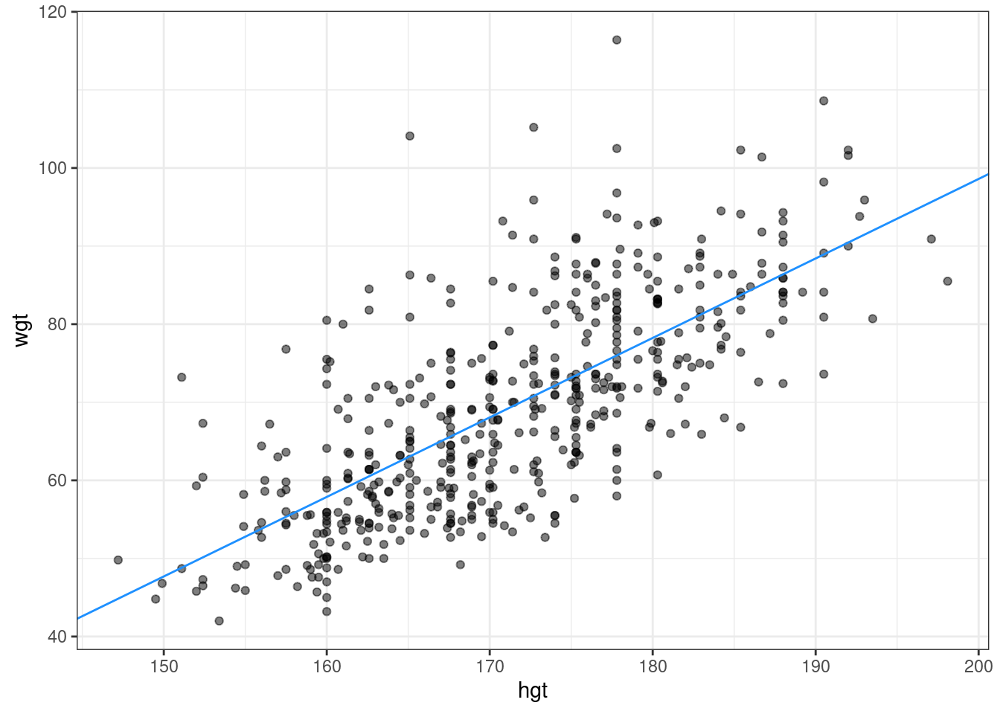

Chapter 5 Interpreting regression models
This chapter looks at how to interpret the coefficients in a regression model.
Interpretation of coefficients
Recall that the fitted model for the poverty rare of U.S. countries as a function of high school graduation rate is:
\[\begin{equation} \widehat{poverty} = 64.594 - 0.591\cdot {hs\_grad} \end{equation}\]
Which of the following equations is the correct interpretation of the slope coefficient?
- Among U.S. counties, each additional percentage point increase in the poverty rate is associated with about a 0.591 percentage point decrease in the high school graduation rate.
- Among U.S. counties, each additional percentage point increase in the high school graduation rate is associated with about a 0.591 percentage point decrease in the poverty rate.
- Among U.S. counties, each additional percentage point increase in the high school graduation rate is associated with about a 0.591 percentage point increase in the poverty rate.
- Among U.S. counties, a 1% increase in the high school graduation rate is associated with about a 0.591% decrease in the poverty rate.
Interpretation in context
A politician interpreting the relationship between poverty rates and high school graduation rates implores his constituents:
If we can lower the poverty rate by 59%, we’ll double the high school graduate rate in our county (i.e. raise it by 100%).
Which of the following mistakes in interpretation has the politician made?
Implying that the regression model establishes a cause-and-effect relationship.
Switching the role of the response and explanatory variables.
Confusing percentage change with percentage point change.
All of the above.
None of the above.
5.1 Fitting simple linear models
While the geom_smooth(method = "lm") function is useful for drawing linear models on a scatterplot, it doesn’t actually return the characteristics of the model. As suggested by that syntax, however, the function that creates linear models is lm(). This function generally takes two arguments:
A
formulathat specifies the modelA
dataargument for the data frame that contains the data you want to fit to the model
The lm() function return a model object having class "lm". This object contains lots of information about your regression model, including the data used to fit the model, the specification of the model, the fitted values and residuals, etc.
Excercise
- Using the
bdimsdataset, create a linear model for the weight of people as a function of their height.
##
## Call:
## lm(formula = wgt ~ hgt, data = bdims)
##
## Coefficients:
## (Intercept) hgt
## -105.011 1.018- Using the
mlbBat10dataset, create a linear model forSLGas a function ofOBP.
##
## Call:
## lm(formula = slg ~ obp, data = mlbbat10)
##
## Coefficients:
## (Intercept) obp
## 0.009407 1.110323- Using the
mammalsdataset, create a linear model for the body weight of mammals as a function of their brain weight, after taking the natural log of both variables.
# Log-linear model for body weight as a function of brain weight
lm(log(body_wt) ~ log(brain_wt), data = mammals)##
## Call:
## lm(formula = log(body_wt) ~ log(brain_wt), data = mammals)
##
## Coefficients:
## (Intercept) log(brain_wt)
## -2.509 1.225Units and scale
In the previous examples, we fit two regression models:
\[\begin{equation} \widehat{wgt} = −105.011 + 1.018 \cdot hgt \end{equation}\]
and
\[\begin{equation} \widehat{SLG}= 0.009 + 1.110 \cdot OBP \end{equation}\]
Which of the following statements is incorrect?
A person who is 170 cm tall is expected to weigh about 68 kg.
Because the slope coefficient for OBP is larger (1.110) than the slope coefficient for hgt (1.018), we can conclude that the association between OBP and SLG is stronger than the association between height and weight.
None of the above.
5.2 The lm summary output
An lm object contains a host of information about the regression model that you fit. There are various ways of extracting different pieces of information.
The coef() function displays only the values of the coefficients. Conversely, the summary() function displays not only that information, but a bunch of other information, including the associated standard error and p-value for each coefficient, the, \(R^2\) adjusted \(R^2\), and the residual standard error. The summary of an "lm" object in R is very similar to the output you would see in other statistical computing environments (e.g. Stata, SPSS, etc.)
Excercise
We have already created the mod object, a linear model for the weight of individuals as a function of their height, using the bdims dataset and the code
Now, you will:
- Use
coef()to display the coefficients ofmod.
## (Intercept) hgt
## -105.011254 1.017617- Use
summary()to display the full regression output ofmod().
##
## Call:
## lm(formula = wgt ~ hgt, data = bdims)
##
## Residuals:
## Min 1Q Median 3Q Max
## -18.743 -6.402 -1.231 5.059 41.103
##
## Coefficients:
## Estimate Std. Error t value Pr(>|t|)
## (Intercept) -105.01125 7.53941 -13.93 <2e-16 ***
## hgt 1.01762 0.04399 23.14 <2e-16 ***
## ---
## Signif. codes: 0 '***' 0.001 '**' 0.01 '*' 0.05 '.' 0.1 ' ' 1
##
## Residual standard error: 9.308 on 505 degrees of freedom
## Multiple R-squared: 0.5145, Adjusted R-squared: 0.5136
## F-statistic: 535.2 on 1 and 505 DF, p-value: < 2.2e-165.3 Fitted values and residuals
Once you have fit a regression model, you are often interested in the fitted values \((\hat{y_i})\) and the residuals \(({e_i})\), where \(i\) indexes the observations. Recall that: \[\begin{equation} e_i = y_i - \hat{y}_i \end{equation}\] The least squares fitting procedure guarantees that the mean of the residuals is zero (n.b., numerical instability may result in the computed values not being exactly zero). At the same time, the mean of the fitted values must equal the mean of the response variable.
In this exercise, we will confirm these two mathematical facts by accessing the fitted values and residuals with the fitted.values() and residuals() functions, respectively, for the following model:
5.4 Tidying your linear model
As you fit a regression model, there are some quantities (e.g. \(R^2\)) hat apply to the model as a whole, while others apply to each observation (e.g. \(\hat{y_i}\)). If there are several of these per-observation quantities, it is sometimes convenient to attach them to the original data as new variables.
The augment() function from the broom package does exactly this. It takes a model object as an argument and returns a data frame that contains the data on which the model was fit, along with several quantities specific to the regression model, including the fitted values, residuals, leverage scores, and standardized residuals.
Excercise
The same linear model from the last exercise, mod, is available in your workspace.
- Load the
broompackage.
- Create a new data frame called
bdims_tidythat is the augmentation of themodlinear model.
- View the
bdims_tidydata frame usingglimpse().
## Rows: 507
## Columns: 8
## $ wgt <dbl> 65.6, 71.8, 80.7, 72.6, 78.8, 74.8, 86.4, 78.4, 62.0, 81.6,…
## $ hgt <dbl> 174.0, 175.3, 193.5, 186.5, 187.2, 181.5, 184.0, 184.5, 175…
## $ .fitted <dbl> 72.05406, 73.37697, 91.89759, 84.77427, 85.48661, 79.68619,…
## $ .resid <dbl> -6.4540648, -1.5769666, -11.1975919, -12.1742745, -6.686606…
## $ .hat <dbl> 0.002154570, 0.002358152, 0.013133942, 0.007238576, 0.00772…
## $ .sigma <dbl> 9.312824, 9.317005, 9.303732, 9.301360, 9.312471, 9.314716,…
## $ .cooksd <dbl> 5.201807e-04, 3.400330e-05, 9.758463e-03, 6.282074e-03, 2.0…
## $ .std.resid <dbl> -0.69413418, -0.16961994, -1.21098084, -1.31269063, -0.7211…5.5 Making predictions
The fitted.values() function or the augment()-ed data frame provides us with the fitted values for the observations that were in the original data. However, once we have fit the model, we may want to compute expected values for observations that were not present in the data on which the model was fit. These types of predictions are called out-of-sample.
The ben data frame contains a height and weight observation for one person.
The mod object contains the fitted model for weight as a function of height for the observations in the bdims dataset. We can use the predict() function to generate expected values for the weight of new individuals. We must pass the data frame of new observations through the newdata argument.
Excercise
The same linear model, mod, is defined in your workspace.
- Print
bento the console.
## wgt hgt
## 1 74.8 182.8- Use
predict()with thenewdataargument to compute the expected weight of the individual in thebendata frame.
## 1
## 81.00909Note that the data frame ben has variables with the exact same names as those in the fitted model.
5.6 Adding a regression line to a plot manually
The geom_smooth() function makes it easy to add a simple linear regression line to a scatterplot of the corresponding variables. And in fact, there are more complicated regression models that can be visualized in the data space with geom_smooth(). However, there may still be times when we will want to add regression lines to our scatterplot manually. To do this, we will use the geom_abline() function, which takes slope and intercept arguments. Naturally, we have to compute those values ahead of time, but we already saw how to do this (e.g. using coef()).
The coefs data frame contains the model estimates retrieved from coef(). Passing this to geom_abline() as the data argument will enable you to draw a straight line on your scatterplot.
Excercise
Use geom_abline() to add a line defined in the coefs data frame to a scatterplot of weight vs. height for individuals in the bdims dataset.
## (Intercept) hgt
## -105.011254 1.017617## intercept slope
## 1 -105 1.018# Add the line to the scatterplot
ggplot(data = bdims, aes(x = hgt, y = wgt)) +
geom_point(alpha = 0.5) +
theme_bw() +
geom_abline(data = coefs,
aes(intercept = intercept, slope = slope),
color = "dodgerblue")